因果卷积
casual卷积最初随WaveNet一起提出,WaveNet是一个生成模型，类似于早期的pixel RNN和Pixel CNN，主要用来生成语音，声音元素是一个点一个点生成的。WaveNet是利用卷积来学习t时刻之前的输入数据（音频），来预测t+1时刻的输出. 对输入数据的顺序很注重, t时刻的输出仅仅依赖于1,2,…,t-1时刻的输入，不会依赖于t+1时刻以及之后时刻的输入。这与BiLSTM的思想截然不同。
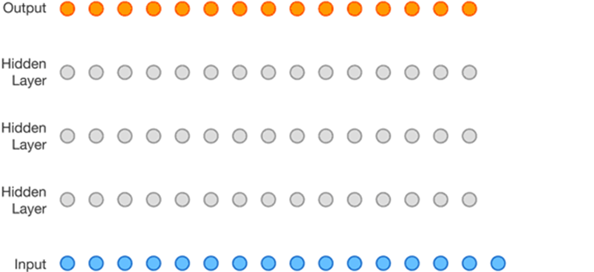
由于声音文件是时间上的一维数组，16KHz的采样率的文件，每秒钟就会有16000个元素，而上面所说的因果卷积的感受野非常小，即使堆叠很多层也只能使用到很少的数据来生成t时刻的的元素，为了扩大卷积的感受野，WaveNet采用了堆叠了（stack）多层扩张（dilated ）卷积(中篇里有提到)来增大网络的感受野，使得网络生成下一个元素的时候，能够使用更多之前的元素数值。1D扩张卷积如下图所示：
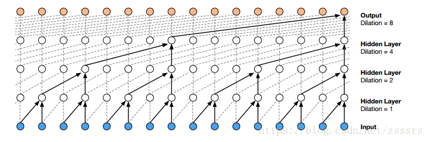
整个生成过程的动态图如下:
变形卷积
deformable卷积来自论文《Deformable Convolutional Networks》,是MASA 2017年的作品，其灵感来源于Google DeepMind 2016年发表的STN（Spatial Transform Network,但二者有着巨大的差别：
- STN作者说明了CNN对于输入数据缺乏空间变换不变性，因此引入了一个spatial transformer module，不需要额外的监督，能够以data-driven的方式学习得到输入图像或特征图的全局空间变换参数，赋予网络spatial invariant能力。ST模块可以分成三个部分：localization net根据输入的feature map回归spatial transform的参数θ，然后用这个参数去生成一个采样的grid，最后根据这个grid以及输入的feature map得到输出的经过空间变换的feature map。
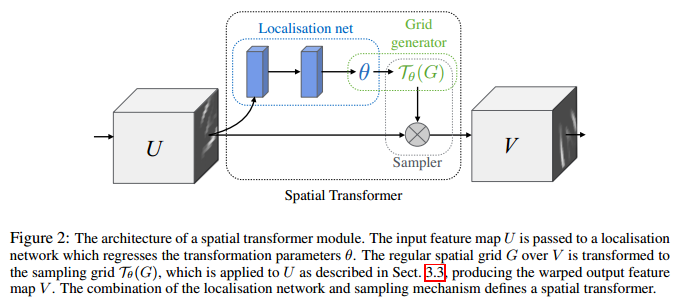
具体而言，localization网络的输入是feature map U∈R^H×W×C，输出 θ=f_loc(U)，该层的结构通常是一个全连接网络或者卷积网络后接一个回归层来训练参数θ。 θ的size取决于我们预先定义的空间变换的类型（仿射，平移，缩放，旋转，剪切等），比如仿射变换的话，参数大小就是6维。
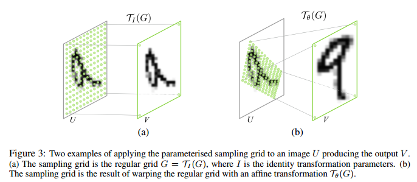
有了空间变换的参数之后，我们就可以知道输出的feature map上的每一个点在输入的feature map上的位置了。比如说对于二维的仿射变换，我们可以建立输出feature map上的坐标和输入feature map上坐标之间的映射关系：如公式：
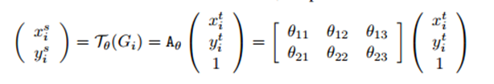
其中 (xti,yti)表示输出的feature map上的坐标，(xsi,ysi) 表示输出feature map上坐标对应在输入feature map上的采样点坐标。但此时往往(xsi,ysi)会落在原始输入特征图的几个像素点中间部分，所以需要利用双线性插值来计算出对应该点的灰度值。
再来说说双线性插值，数字图像中实现缩放的方法有很多种，其中一种就是双线性插值，在实现图像缩放时，有两种方法来确定缩放后的图像的像素值，第一种是根据原图像中的的像素找到对应的缩放后的图像中的像素，第二种是根据缩放后的图像找到对应的原图像中的像素.
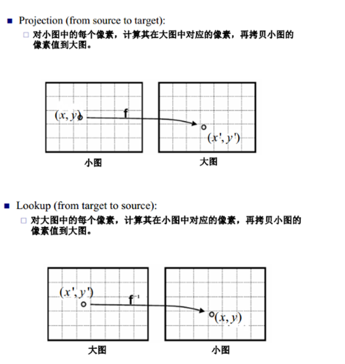
但是第一种方法有缺点，因为小图中的像素点到大图中的像素点不是满射，因此大图中的点不能完全有像素值，第二种方法也有缺点，大图中的点逆映射为小图中的点时，得到的像素坐标值可能不是整数，一种办法是采用最近邻方法，即将得到的坐标值与相邻的原图像中的像素坐标值比较，取离得最近的坐标值对应的像素值作为缩放后的图像对应的坐标值的像素值，这种办法可能导致图像失真，因此采用双线性差值的办法来进行计算相应的像素值。
在对图像进行仿射变换时，会出现一个问题，当原图像中某一点的坐标映射到变换后图像时，坐标可能会出现小数,如旋转后的右图所示，这样在原图中就没有对应的像素值。
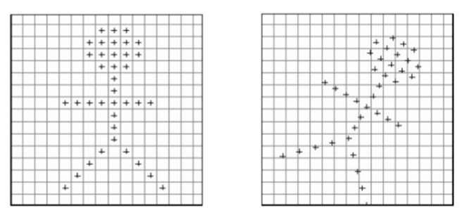
在实现时我们通常将变换后图像上所有的位置映射到原图像计算（这样做比正向计算方便得多），即依次遍历变换后图像上所有的像素点，根据仿射变换矩阵计算出映射到原图像上的坐标（可能出现小数），然后用双线性插值，根据该点周围4个位置的值加权平均得到该点值。过程可用如下图和公式表示：
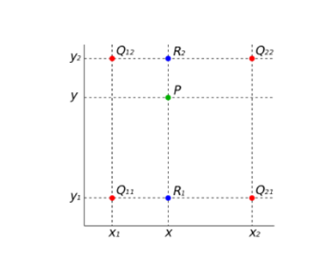
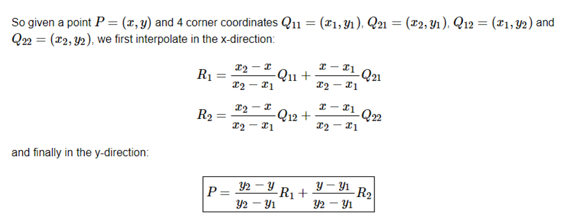
这里R1,Q11等均表示那一点的像素值。将R1,R2代入得：
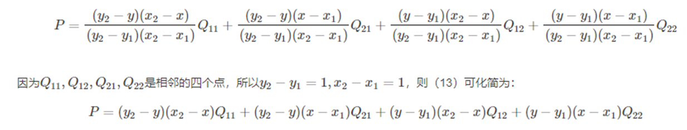
知道了输出feature map在输入feature map上的采样点坐标之后，接下来就是要根据采样点的值确定输出目标点的值了。这里一般会用到kernel，以采样点为中心的kernel范围内的点对输出目标点的值都有贡献。
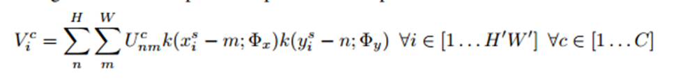
上式中，Vic是输出特征图的第c个通道中位置(xti,yti)处的像素i的值，所有的空间变换对于各个channel都是一样的。H′,W′表示输出的特征图的长宽。U表示输入特征图上第c个通道中点(m,n)的像素值，k表示预定义的kernel即采样核，xsi,ysi表示输入feature map上的采样点坐标，Φ表示kernel的参数。
可以这样理解：（1）输出特征图上某一点Vic的灰度值对应于输入特征图上某一点(xis,yis)的灰度值，而这点的灰度值由周围的若干点的灰度值Ucnm共同确定并且距离(xis,yis)越近（距离关系由xis-m和yis-n确定），影响越大（权重越大）。（2）具体的灰度插值方法由k()中Φx和Φy确定。当采用最近邻或双线性插值方法时，上述公式就退化成如下两个公式：
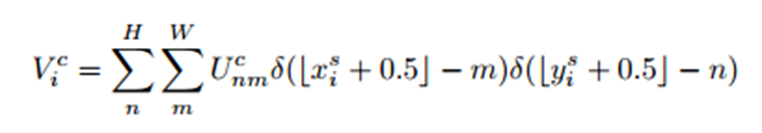
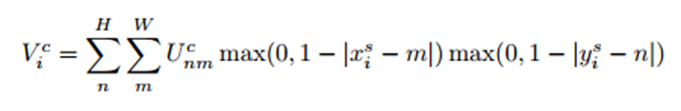
双线性插值使得目标灰度值只与(xsi,ysi)周围4个点的灰度有关。具体来说，当|xsi−m|或者|ysi−n|大于1时，对应的max()项将取0，也就是说，只有(xsi,ysi)周围4个点的灰度值决定目标像素点的灰度并且当|xsi−m|和|ysi−n|越小，影响越大（即离点(xsi,ysi)越近，权重越大)，这和前面介绍双线性插值的结论是一致的。另外很重要的一点是，该公式对Ucnm和(xsi,ysi)是可导的，如下所示。也就是说，ST的变换过程是可以在网络中不断训练来修正参数的。
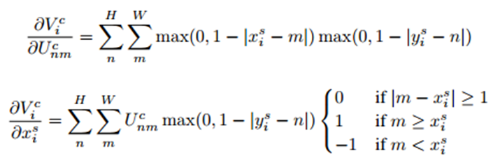
U就是前一个CNN层的输出，包含参数w的，先对U求偏导才能继续对U中包含的前一层参数W求偏导。到localization的链式：z->V->theta。到前一层的链式：z->V->U->W，localization等于在U后开了一个小门，误差一部分流到门就断了，把theta更新。另一部分还得从U往前流直到数据源输入层。最后根据以下公式求xis对θ的导数。
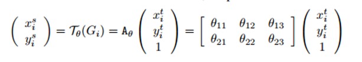
- 言归正传，在Deformable convolution一文中，以标准的3*3卷积为例：
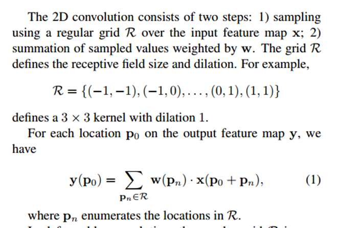
对于每个输出y(p0)，都要从x上采样9个位置，这9个位置都在中心位置x(p0)向四周扩散得到的gird形状上，(-1,-1)代表x(p0)的左上角，(1,1)代表x(p0)的右下角，其他类似。
而在可变形卷积中，如下所言：
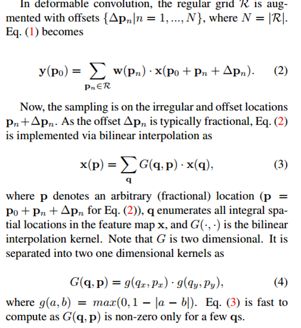
同样对于每个输出y(p0)，都要从x上采样9个位置，这9个位置是中心位置x(p0)向四周扩散得到的，但是多了一个新的参数 ∆pn，允许采样点扩散成非gird形状.注意∆pn很有可能是小数，而feature map x上都是整数位置，这时候就需要双线性插值。最终deformable convolution如下图所示：
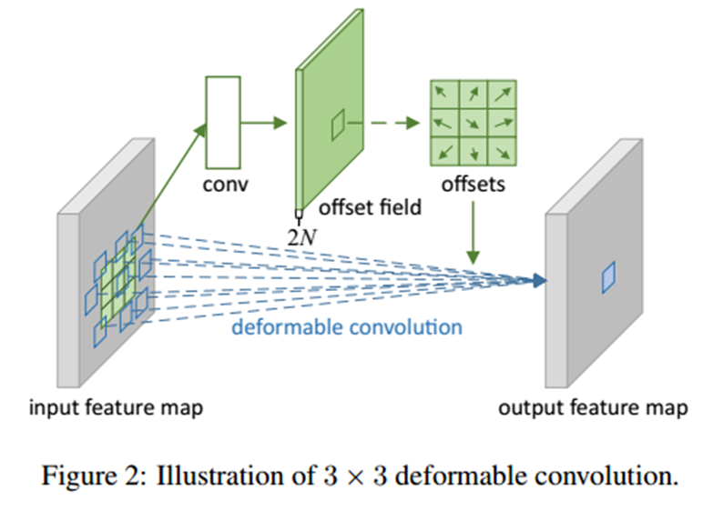
- 原始图片或特征图（大小为b × h × w × c），记为U，经过一个普通卷积，卷积填充为same，即输出输入大小不变，对应的输出结果为（b × h × w × 2c)，记为V，输出的结果是指原图片U中每个像素的偏移量（x偏移与y偏移，因此为2c）。
- 将U中图片的像素索引值与V相加，得到偏移后的position（即在原始图片U中的坐标值），需要将position值限定为图片大小以内。position的大小为（b × h × w × 2c)，但position只是一个坐标值，而且还是float类型的，我们需要这些float类型的坐标值获取像素值。
- 取一个坐标值（a,b)，将其转换为四个整数，floor(a), ceil(a), floor(b), ceil(b)，将这四个整数进行整合，得到四对坐标（floor(a),floor(b)), ((floor(a),ceil(b)), ((ceil(a),floor(b)), ((ceil(a),ceil(b))。这四对坐标每个坐标都对应U中的一个像素值，而我们需要得到(a,b)的像素值，这里采用双线性差值的方式计算（一方面得到的像素准确，另一方面可以进行反向传播）。
上采样
这里又要谈点题外的东西了，回顾之前在中篇中提到的转置卷积，其实就是一种上采样操作，不过其参数kernel是可学习的。如下为kernel=3, stride=2的转置卷积的一个示例：
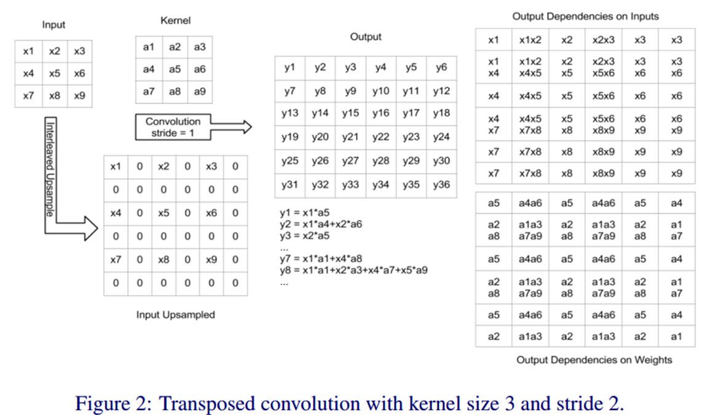
同样地，上节中提到的插值一样可以做到上采样：
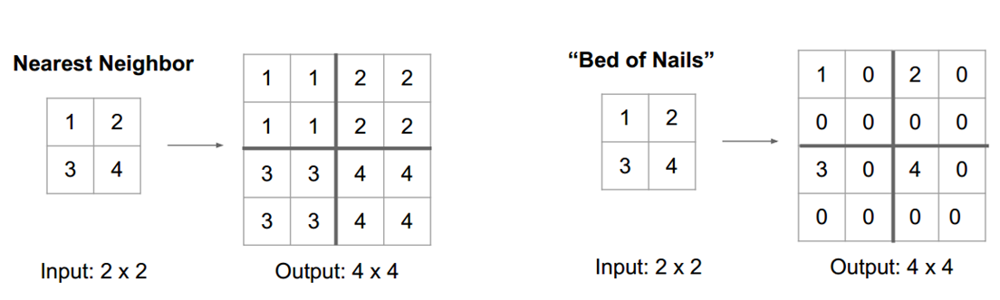
类似的，还有Zeiler等人论文《Visualizing and Understanding Convolutional Networks
》中提到的”Max Unpooling”，如下图所示：
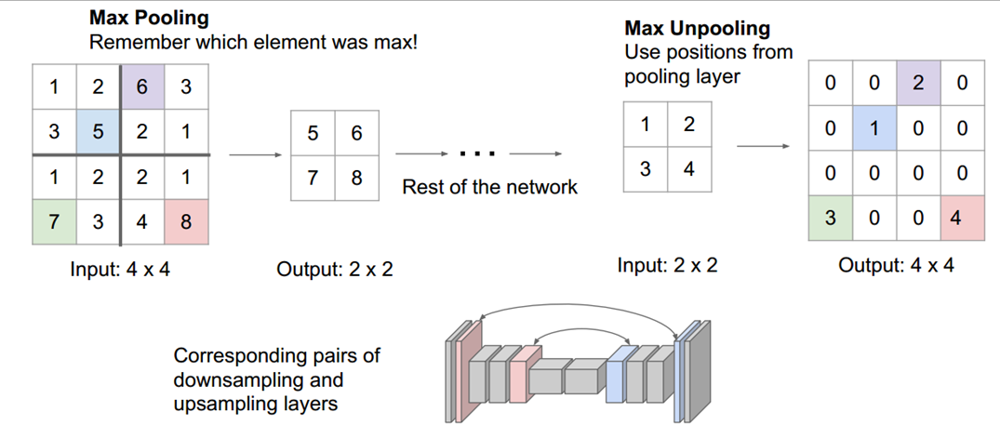
更多的上采样操作如Decomposed Transposed Convolution、Separable Transposed Convolution、Depth To Space和Bilinear additive upsampling等可在《The Devil is in the Decoder
》一文中查看。
Graph Convolution
推荐阅读 (https://github.com/thunlp/GNNPapers)
Spherical CNNs
推荐阅读 (https://arxiv.org/abs/1801.10130)
深度学习框架中的卷积实现
待续…